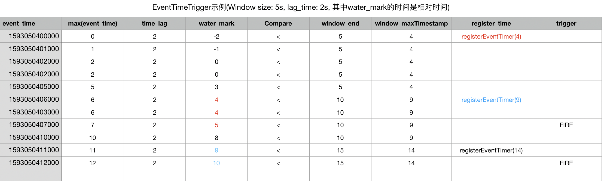

2.4.6 Triggers
Trigger就是触发的意思，在flink中，trigger决定了窗口在什么时候进行触发运行。每个wndowAssigner都有一个默认的trigger，当然可以自定义trigger。内部已实现的trigger包括EventTimeTrigger， ProcessTimeTrigger以及CountTrigger等。
回顾2.4.3节的乱序模式，在使用EventTime语义编写window函数时它默认调用EventTimeTrigger，查看EventTimeTrigger源码定义的onElement和onEventTime可以用下表描述触发过程：
源码：
@Override
public TriggerResult onElement(Object element, long timestamp, TimeWindow window, TriggerContext ctx) throws Exception {
if (window.maxTimestamp() <= ctx.getCurrentWatermark()) {
// if the watermark is already past the window fire immediately
return TriggerResult.FIRE;
} else {
ctx.registerEventTimeTimer(window.maxTimestamp());
return TriggerResult.CONTINUE;
}
}
@Override
public TriggerResult onEventTime(long time, TimeWindow window, TriggerContext ctx) {
return time == window.maxTimestamp() ?
TriggerResult.FIRE :
TriggerResult.CONTINUE;
}
数据：
spark,20,1593050400000 spark,30,1593050401000 flink,10,1593050402000 flink,20,1593050402000 spark,40,1593050405000 spark,100,1593050406000 spark,10,1593050403000 flink,200,1593050407000 flink,300,1593050410000 hadoop,20,1593050411000 hadoop,20,1593050412000
触发过程：

对于自定义的trigger需要自己实现Trigger的抽象方法，根据需求还需要考虑利用watermark处理乱序数据，这时可以参考默认实现的EventTimeTrigger类。